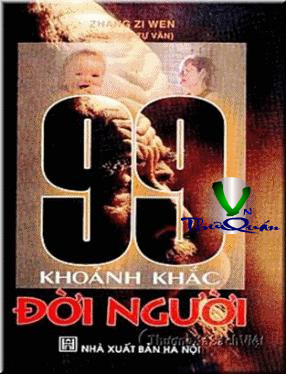

« Back
99 Khoảnh Khắc Đời Người
By Zhang Zi Wen

Lời Nói Đầu
I- Màn Mở Đầu
2. Khoảnh Khắc Phát Hiện Mình Lớn Lên Trông Xấu Xí
3. Khoảnh Khắc Phát Hiện Mình Ngu Đần
4- Khoảnh Khắc Tự Cảm Thấy Tốt Đẹp
5- Khoảnh Khắc Tâm Tính Xốc Nổi Không Chuyên
6- Khoảnh Khắc Chọn Định Khoa, Ngành Học
7- Khoảnh Khắc Thành Tích Học Tập Giảm Sút
8- Khoảnh Khắc Hỏng Thi
9- Khoảnh Khắc Sa Vào Lưới Tình
10- Khoảnh Khắc Chọn Định Bạn Đời
11- Khoảnh Khắc Thất Tình
12- Khoảnh Khắc Cử Hành Hôn Lễ
13- Khoảnh Khắc Trở Thành Cha Mẹ
14- Khoảnh Khắc Phát Hiện Con Cái Không Xứng Đáng
15- Khoảnh Khắc Hôn Nhân Tan Vỡ
16-Khoảnh Khắc Hôn Nhân Tan Vỡ
17- Khoảnh Khắc Đi Lại Với Người Xa Lạ
18- Khoảnh Khắc Đi Lại Với Đồng Nghiệp
19- Khoảnh Khắc Đi Lại Với Lãnh Đạo Trực Tiếp
20- Khoảnh Khắc Đi Lại Với Người Địa Vị Thấp
21- Khoảnh Khắc Đi Lại Với Danh Nhân Quyền Thế
22- Khoảnh Khắc Đi Lại Với Người Tính Tình Không Hợp Với Mình
23- Khoảnh Khắc Cảm Thấy Không Biết Giao Tiếp
24- Khoảnh Khắc Cần Nhờ Vả Người Khác
25- Khoảnh Khắc Cùng Chạm Cốc
26- Khoảnh Khắc Xấu Hổ Ngượng Ngùng
27- Khoảnh Khắc Vô Cớ Nghi Ngờ Người Khác
28- Khoảnh Khắc Cảm Thấy Không Thể Hợp Tác Với Người Khác
29- Khoảnh Khắc Chỉ Trích Người Khác
30- Khoảnh Khắc Nhìn Thấy Đồng Nghiệp Thất Bại
31- Khoảnh Khắc Đem Thất Vọng Đến Cho Người Khác
32- Khoảnh Khắc Thất Tín Với Người Khác
33 Khoảnh Khắc Ước Mơ Viễn Vông
34- Khoảnh Khắc Chỉ Muốn Thành Công Và Có Lợi Ngay
35- Khoảnh Khắc Lý Tưởng Xung Đột Với Hiện Thực
36- Khoảnh Khắc Cá Tính Trái Ngược Với Hoàn Cảnh
37- Khoảnh Khắc Cạnh Tranh Với Người Khác
38- Khoảnh Khắc Mạo Hiểm Tiến Thủ
39- Khoảnh Khắc Cần Phải Tự Hy Sinh
40- Khoảnh Khắc Bị Những Việc Ngoài Bổn Phận Làm Xáo Trộn
41- Khoảnh Khắc Bị Những Việc Vụn Vặt Bao Vây
42- Khoảnh Khắc Do Dự Không Dám Quyết Định
43- Khoảnh Khắc Cố Chấp Với Thiên Kiến
44- Khoảnh Khắc Cần Phải Phục Tùng Trái Với Lương Tâm
45- Khoảnh Khắc Sinh Ra Tư Tưởng Ngại Khó Khăn
46- Khoảnh Khắc Sinh Ra Tư Tưởng Uể Oải
47- Khoảnh Khắc Sinh Ra Tâm Lý Nhút Nhát
48- Khoảnh Khắc Sinh Ra Tâm Lý Ỷ Lại
49- Khoảnh Khắc Xuất Hiện Hành Vi Tự Tư Tự Lợi
50- Khoảnh Khắc Theo Đòi Ăn Chơi Kịp Thời
51- Khoảnh Khắc Bị Phê Bình Khiển Trách
52- Khoảnh Khắc Gặp Bất Hạnh Ngoài Ý Muốn
53- Khoảnh Khắc Đau Ốm Liên Miên
54- Khoảnh Khắc Thất Nghiệp
55- Khoảnh Khắc Bị Bãi Miễn Chức Vụ
56- Khoảnh Khắc Sa Ngã
57.Khoảng Khắ Cảm Thấy Cô Lập Không Được Viện Trợ
58. Khoảnh Khắc Bị Người Khác Mưu Toan
59. Khoảnh Khắc Bản Thân Ở Vào Hoàn Cảnh Ác Liệt
60. Khoảnh Khắc Bị Bạn Bè Thân Thích Ruồng Bỏ
61. Khoảnh Khắc Gặp Thất Bại
62. Khoảnh Khắc Nảy Sinh Ý Nghĩ Trả Thù
63. Khoảnh Khắc Bỏ Lỡ Cơ Hội
64. Khoảnh Khắc Cảm Thấy Bị Kỳ Thị
65. Khoảnh Khắc Sáng Tạo Thành Quả Không Được Thừa Nhận
66. Khoảnh Khắc Gặp Phải Người Khác Từ Chối
67. Khoảnh Khắc Gặp Phải Vu Cáo Hãm Hại
68. Khoảnh Khắc Gặp Đối Xử Thô Bạo
69. Khoảnh Khắc Bị Hiểu Nhầm
70. Khoảnh Khắc Sản Sinh Nỗi Buồn Vô Cớ
71. Khoảnh Khắc Thể Nghiệm Đau Khổ
72. Khoảnh Khắc Sản Sinh Tâm Lý Tự Ti
73. Khoảnh Khắc Cảm Thấy Phẫn Nộ
74. Khoảnh Khắc Cảm Thấy Sống Quá Mệt Mỏi
75. Khoảnh Khắc Làm Những Điều Trái Lương Tâm
76. Khoảnh Khắc Mắc Nợ Tinh Thần
77. Khoảnh Khắc Sản Sinh Tâm Lý Gặp May
78. Khoảnh Khắc Sản Sinh Tư Tưởng Chán Nghề
79. Khoảnh Khắc Theo Đuổi Hư Vinh
80. Khoảnh Khắc Niềm Tin Tốt Đẹp Tiêu Tan
81. Khoảnh Khắc Giận Thói Đời
82. Khoảnh Khắc Dao Động Trước Vấp Váp
83. Khoảnh Khắc Ham Muốn Không Được Thỏa Mãn
84. Khoảnh Khắc Tự Khoe Khoang Khoác Lác
85. Khoảnh Khắc Có Quyền Thế Nhất Định
86. Khoảnh Khắc Bị Người Khác Giới Cám Dỗ
87. Khoảnh Khắc Bắt Đầu Tích Lũy Của Cải
88. Khoảnh Khắc Gật Gù Đắc Chí
89. Khoảnh Khắc Được Khen Ngợi
90. Khoảnh Khắc Bị Người Khác Ghen Tị
91. Khoảnh Khắc Giành Được Thành Công
92. Khoảnh Khắc Hám Hưởng Thụ Quá Mức
93. Khoảnh Khắc Biết Được Mình Không Còn Trẻ Nữa
94. Khoảnh Khắc Biết Được
95. Khoảnh Khắc Cảm Thấy Tinh Lực Không Còn Dồi Dào
96. Khoảnh Khắc Cảm Thấy
97. Khoảnh Khắc Trí Nhớ Suy Giảm
98. Khoảnh Khắc Đối Mặt Ánh Tà Dương
99. Khoảnh Khắc Đi Đến Kết Thúc Cuộc Đời